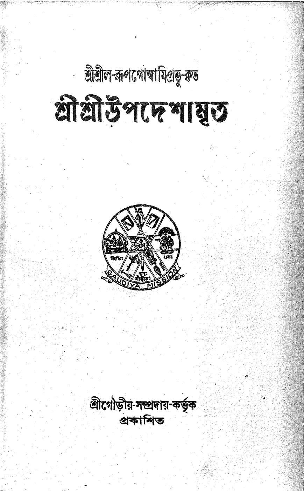

Study paths
Read the books of the Gauḍīya ācāryas as a course. A path takes one verse at a time, so a teacher, a student or a study group always knows where the lesson begins and where it ends.
Upadeśāmṛta in 11 lessons
11 verses by Śrīla Rūpa Gosvāmī, one lesson for each verse. This is the first path.
0 of 11 lessons done
This browser does not allow saving, so progress is lost when you close the page.
Marking lessons done needs JavaScript.
Start lesson 1Progress is kept only in this browser. No account, no login.
The set text: Gauḍīya Maṭha edition, 1942

Lesson map
- 1Lesson 1vāco vegaṁ manasaḥত্রিদণ্ডিগোস্বামীর লক্ষণ
- 2Lesson 2atyāhāraḥ prayāsaś caভক্তির প্রতিকূল ষড়দোষ
- 3Lesson 3utsāhān niścayād dhairyātভক্তির অনুকূল ষড়গুণ
- 4Lesson 4dadāti pratigṛhṇātiষড় বিধ প্রীতি-লক্ষণ
- 5Lesson 5kṛṣṇeti yasya giriমধ্যমাধিকারীর ত্রিবিধ-বৈষ্ণব-সেবন
- 6Lesson 6dṛṣṭaiḥ svabhāva-janitair vapuṣaśপ্রাকৃত-দৃষ্টিতে অপ্রাকৃত বৈষ্ণব-দর্শন নিষিদ্ধ
- 7Lesson 7syāt kṛṣṇa-nāma-caritādi-sitāpy avidyā-অবিদ্যাবিনাশ ও নামে রুচি-উদয়ের উপায়
- 8Lesson 8tan-nāma-rūpa-caritādi-sukīrtanānu-শ্রীব্রজভজন-প্রণালী
- 9Lesson 9vaikuṇṭhāj janito varāভজনীয়-স্থানসমূহের তারতম্য
- 10Lesson 10karmibhyaḥ parito hareḥCaption to be added
- 11Lesson 11kṛṣṇasyoccaiḥ praṇaya-vasatiḥ preyasībhyoশ্রীরাধাকুণ্ড-স্নায়ীর সৌভাগ্য-পরাকাষ্ঠা
What is in every lesson
The verse
In the original script and in IAST, with its translations. Each layer can be switched off.
Key terms
The words of the verse, each with a definition from the editors.
Questions for reflection
Written by the editors, for a student alone or a group together.
Go deeper with Srila Prabhupada
The books, lectures and conversations where he quotes the verse.
Reading for the lesson
The commentaries of the ācāryas.
What comes after the first path
Released so far: 1 of 180 works
It is the Upadeśāmṛta. 31 of the 180 works are arranged verse by verse, which is the form a study path needs.
First: Upadeśāmṛta in 11 lessons
All 11 verses with all their commentaries, released together with acaryapedia.org.
Then: further paths, in stages
Further paths come in stages. The order is set by the editorial team, and there are no dates yet.
Hear when a new path opens
We send a newsletter whenever a new book is added to the library.
Authors
In the first path
All 16 authors in the library
- Śrīla Baladeva Vidyābhūṣaṇa 15 works
- Śrīla Bhaktisiddhānta Sarasvatī Ṭhākura 17 works
- Śrīla Bhaktivinoda Ṭhākura 49 works
- Śrī Caitanya Mahāprabhu 1 works
- Śrīla Jīva Gosvāmī 20 works
- Śrīla Kavi-karṇapūra 6 works
- Śrīla Kṛṣṇadāsa Kavirāja Gosvāmī 3 works
- Śrīla Locana dāsa Ṭhākura 2 works
- Śrīla Narottama dāsa Ṭhākura 3 works
- Śrīla Prabodhānanda Sarasvatī 11 works
- Śrīla Raghunātha dāsa Gosvāmī 4 works
- Śrīla Rūpa Gosvāmī 17 works
- Śrīla Sanātana Gosvāmī 4 works
- Śrīla Viśvanātha Cakravartī Ṭhākura 13 works
- Śrīla Vṛndāvana dāsa Ṭhākura 1 works
- Śrīla Vyāsadeva 14 works